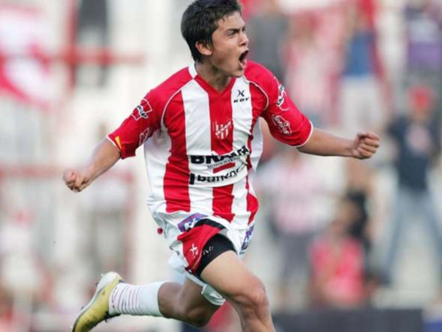

Vuelve Paulo Dybala a vestir la camiseta del Glorioso Cordobés
Luego de 8 años, el joven nacido en Laguna Larga jugará nuevamente en Instituto
A sus 26 años, y tras su experiencia en el fútbol italiano, Paulo regresa a Alta Córdoba, donde ya jugó de 2011 al 2012, quedando en la puerta del ascenso de esa temporada. Año muy recordado por contar con River Plate en la B nacional.
Su contratación será ahora por un periodo de seis meses. El Club y el delantero han acordado un acuerdo hasta el final de la temporada actual con la opción de extender el contrato para la próxima.
Todo indica que ya estará disponible para el próximo encuentro de "La Gloria", el 2 de marzo frente a la Quilmes. El equipo lo necesita, ya que atraviesan dificultades desde el inicio de la temporada.
El delantero declaro al respecto: "Vuelvo porque soy un agradecido, estoy muy feliz de volver al club que me formó y me vió crecer. Vamos a intentar remontar para darle a los hinchas la alegría que se merecen."
En su primer paso por Instituto, el delantero jugó un total de 40 partidos, convirtiendo 17 goles. Luego fe transferido al Palermo, donde jugó disputó dos temporadas. Luego, vistió la camiseta de Juventus, equipo con el cual ganó 3 Scudettos.